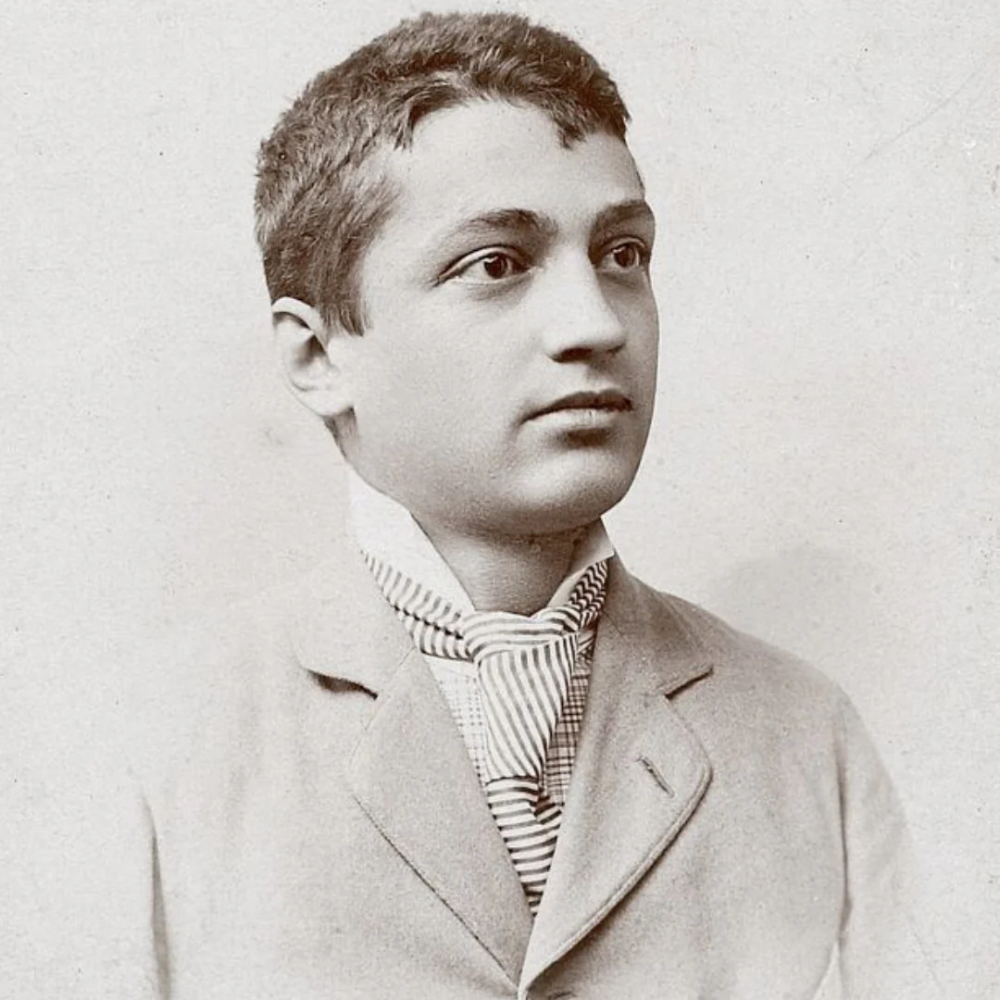
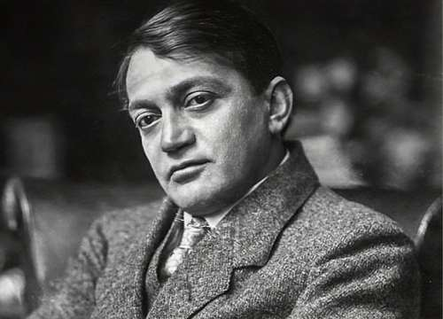
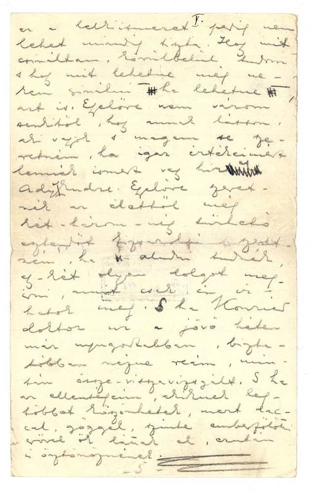
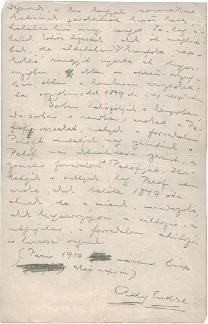
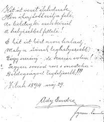

Ady Endre
Kezdetek

- Született: 1887, Érmindszenten
- elszegényedett nemesi család
- Apja benne látta a lehetőséget, hogy újra meggazdagodjon a család
Tanulmányai
- Érmindszenti református elemi iskola
- Nagykárolyi piarista gimnázium
- Zilahi református kollégium
- Debreceni jogakadémia
- Pesti jogi kar
Élete
1899-ben nagyváradra ment, ahol Szabadság című laphoz szerződött. Az igazságtalanságról és munkásnyomrról írt cikke ellenszenvet gerjesztett ellen, ezért átment a Nagyváradi napló-hoz.
Jó újságíróvá vált, egy új verses kötetet is kiadott

1903 augusztusában ismerkedett meg Dyósiné Brüll Adéllal, akit Ady Lédának nevezett el. Lírai kibontakozását a Párizsi utazásai is segítették.
A második Párizsi tartózkodása és a földközi-tengeri utazásai termékeny időszaka volt költészetének. Az ebben az időszakban megjelent harmadik verseskötete fontos mérföldkő volt a magyar irodalomban. Az igaz sikert, a Vér és arany című negyedik verseskötete hozta, amelyet a kritikusok is jól fogadtak
1908-ban a Nyugat című lap első számában megjelentek Ady művei, később egész életében a lap munkatársa maradt. A Holnap nevű irodalmi csoport egyik alapítótagja volt
1914-ben találkozott először Boncza Bertával akivel már régebb óta levelezett. 1915-ben Boncza Berta apja beleegyezése nélkül összeházasodtak.
A világháború kitörése rossz hatással volt Adyra, ez idő alatt nem is közölt írásokat. 1918-ban jelent meg következő verseskötete a A halottak élén címmel
Az őszirózsás forradalom után, a népköztársaság megpróbálta kisajátítani mint a saját költője, de Ady igyekezett ettől elhatárolódni. Az akkoriban jelenlévő Spanyolnáthát elkapta, ami miatt elkezdték a Liget szanatóriumban gondozni, ahol később meghalt.
Költészete
Akkoriban a legtöbb költő a Petőfi féle népies stílusban írt, Ady voltaz első, aki utat tört egy új, modern stílusnak. Ez az új stílus először nem jelent meg a verseiben csak a publicisztikai és más írásaiban.
Megalkotta a saját kevert ritmusát amit a belső ritmusok, halmozások és ismétlések jellemeznek. Továbbá új szavakat is alkotott.
Ady költészetét befolyásolták Baudelaire illetve Verlaine versei. Gyakran használta a szimbolizmus elemeit.
A szecesszió jeleit is fel lehet ismerni műveiben, mint például: ehzotikusság, különlegesség és dekoratv vonalak.
Költészetében megfigyeéhető a harc és a lázadás a kor helyzete ellen. Költészetét lehet úgy venni, mint ha az lenne maga a forradalom.
Költészetének egyik legjellemzőbb vonása a különös jelzők használata. Gyakori témái a testi-lelki kettészakadás illetve az életszeretet.



Fontosabb művei
| mű címe | megjelenés éve |
|---|---|
| Vér és arany | 1907 |
| Az Illés szekerén | 1908 |
| Szeretném, ha szeretnének | 1909 |
| A halottak élén | 1918 |